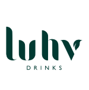

Hi, I'm Andy
A T-shaped designer and strategist with over 12 years experience in crafting digital products and services.
From big brands to zero-to-one startups, I’ve worked with clients across multiple industries in both public and private sector.
Case study: Designing for scale with a robust design system
How I designed the MVP of a highly-configurable Case Management System with a focus on reusability and rapid scalability.
View case study